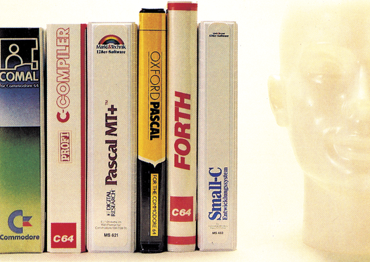
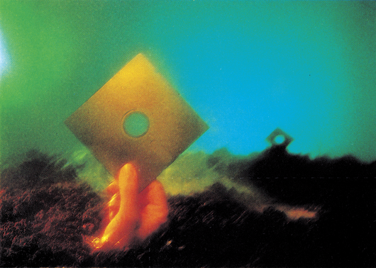
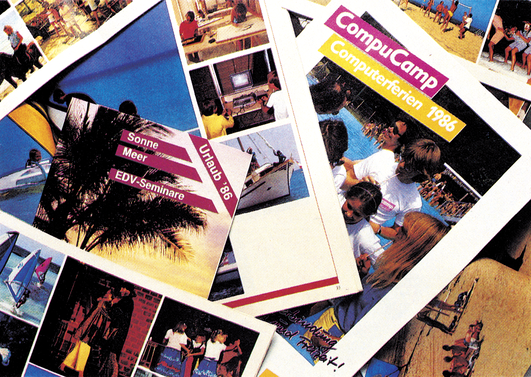

Vorschau
Lernprogramme
Computer helfen nicht nur in Lehre, Forschung und Wissenschaft, sondern auch zu Hause. Dazu werden Lernprogramme angeboten, die den geduldigen Nachhilfe-Lehrer für die unterschiedlichsten U nterrichtsfächer ersetzen sollen. Wir informieren Sie über das Angebot für den C 64. Weiterhin veröffentlichen wir einen Vokabel-Trainer zum Abtippen, der Ihnen in Zukunft in-tesives Lernen leichter macht. Menüsteuerung und ein Hilfsbildschirm ermöglichen sofortiges Einsteigen.
Hilfen für Elektronik-Bastler
Für Bastler, die viel mit Digitalschaltungen zu tun haben, stellen wir in der nächsten Ausgabe ein Programm vor, das es gestattet, Gatterschaltungen rein softwaremäßig auf ihre Funktion hin zu testen. Dies erfolgt ohne weiteren Hardware-Aufwand. Man spart sich dadurch kostspielige Hardware-Aufbauten, die bei größeren Schaltungen nicht mehr zu vermeiden sind.
Ebenfalls startet in der folgenden Ausgabe ein Kurs über Reparaturen von Computer und Peripherie. Dieser Kurs soll Ihnen helfen, kleinere Schäden an Ihrer Computer-Anlage selbst zu finden und zu beheben, ohne daß Sie wegen leicht zu behebender Fehler wochenlang auf Ihre Geräte warten müssen.
Umschaltplatine
Das 64'er-DOS wurde vielfach gekauft und abgetippt. Da ein Betrieb mit der Data-sette nicht mehr möglich ist, mußte man demnach für Kassettenoperationen das Original-Betriebssystem wieder in den Computer einsetzen. Dieser Umstand wird durch eine absturzfreie Umschaltplatine, die wir im nächsten Heft vorstellen, beseitigt. Ebenfalls dabei: Tips und Hilfen, um auch das letzte aus Ihrem 64'er-DOS herauszuholen.
Programmiersprachen

Basic-Erweiterungen und neue Programmiersprachen sollen die Programmierung des C 64 vereinfachen. Zum Beispiel Comal für strukturiertes Programmieren, zur einfachen Grafik- oder Klangerzeugung. Eine Befehlsliste dieser beliebten Hochsprache liefert einen kleinen Vorgeschmack. Mit einer Marktübersicht durchleuchten wir das Angebot an Programmiersprachen.
Neues aus dem Sumpf

Ein Jahr ist vergangen, seit wir das letzte Mal über die Raubkopierer-Szene berichteten. In diesemJahr hat sich im Sumpf einiges getan. Wir sprachen mit Software-Firmen, Knackern und Kopierern. Konnte man den Kopierern durch das geänderte Urheberrecht das Handwerk legen oder hat sich niemand davon beeindrucken lassen? Was ist aus den bekannten Knackern geworden?
Ausbildung am Computer

Ein Schwerpunkt in der nächsten Ausgabe behandelt das Thema Schule und Ausbildung. Viele Informationen wird es dazu geben. Sie erfahren, wie Computer-Ausbildung in den Schulen durchgeführt wird und was geplant ist. Auch über die Konzepte einzelner Länder werden wir Sie informieren. Außerdem gehen wir der Frage nach, ob sich Computercamps lohnen.
Brandneue Drucker von Epson und Brother
Zwei brandneue Drucker stellen wir vor. Der Epson EX 800 ist ein reinrassiger Druk-ker-Bolide, der es auf sagenhafte 300 Zeichen pro Sekunde bringt. Aber nicht nur die Geschwindigkeit, sondern auch sein Bedienungskomfort mit vielen Funktionstasten und einer Farbfähigkeit machen diesen Drucker interessant. Für einige Überraschungen sorgt der »Kleinste« von Brother, der M 1109, der nun in einer an den C 64 (Commodore-Drucker kompatibel) angepaßten Version erhältlich ist.